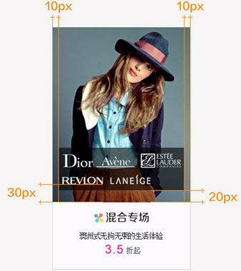

统一特卖会首页V3.0中，混合专场当多个品牌logo同时存在时的预售图样式，
并为混合专场设计统一视觉标识，培养用户习惯。
混合专场logo图片与其他品牌logo同大，logo尺寸98*48px；
1、logo 以白色或黑色半透明背景做衬底（详见下文用色说明）
2、背景半透明衬底：
宽：206px；
距离预售图边缘：左右留白10px
距离预售图底部：20px（保证等比缩小为分类预售图时，logo显示完整信息不被裁切）
3、背景半透明衬底 高度：
logo 数量≤ 3个：
高 40px，logo 以单行形式从左至右依次排开；
全部logo距离背景色块边缘左右各5px留白，各logo间距5px；
3个 ＜ logo 数量 ≤ 6个：
高 70px，logo 以上下两行从左至右依次排开；上下两行logo居左对齐；
全部logo距离背景色块边缘左右各5px留白，各logo间距5px，上下行距至少5px（建议10px）；
为避免预售图设计元素较多较复杂时品牌logo显示不清晰，logo摆放时做半透明衬底处理：
1）预售图为白色或浅色时，做白色半透明衬底；
色值：#ffffff，透明度建议70%（可根据实际效果稍作调整），logo保持原样式不变；
2）预售图为深色或元素较多时，做黑色半透明衬底；
色值：#000000，建议透明度60%（可根据实际效果稍作调整），logo做翻白处理；
1.预售图设计元素和用色不宜太花，太杂乱；
2.品牌logo应保证清晰可见，并按照规范在限定区域内整齐排列；
3.logo底部半透明区域的用色及透明度应与整个预售图看起来协调，统一，
避免logo与预售图有太大反差或融与图片中，例如：